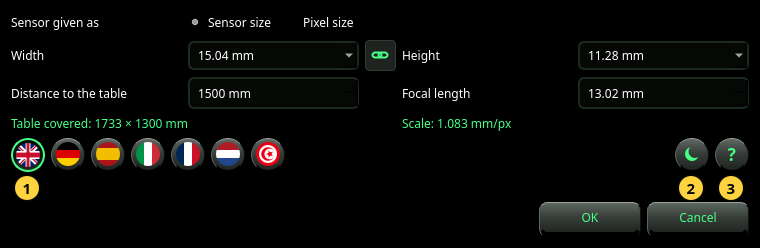

Set Up
The camera that gives the scale, the language, the theme and the manual.
Set up opens the Set Up dialog. It holds what the photo alone cannot tell: how far the camera is from the table, and, when the photo does not say it, the lens and the sensor. It also chooses the language and the theme, and opens this manual.


The camera
- Sensor given as — how you describe the sensor: by its Sensor size (width × height in mm) or by its Pixel size (width × height of one pixel in µm). Use Sensor size unless you know the photo is at the sensor's full resolution.
- Width and Height — the sensor's size, or one pixel's size. Choose an entry from the list or type a number. In Sensor size mode the list names common sensor formats (1/2.3″, 1″, APS-C, full frame and others); choosing one also sets its height.
- The chain between them — on, the height follows the width (a square pixel or a square sensor). It turns off by itself when a named sensor has a different height.
- Distance to the table — from the camera to the table top, in mm. Measure it: every millimetre counts (see Reference).
- Focal length — the lens's focal length in mm, as printed on the lens or shown by the camera. Use the real focal length, not the 35 mm equivalent.
Under the fields, in green, the dialog shows what these values give:
- Table covered — the part of the table the photo shows, in mm.
- Scale — the size of one pixel on the table, in mm/px. Two numbers (for example 0.578 × 0.646 mm/px) mean the pixels are not square.
A result that needs the size of the photo reads — (needs a photo) until a photo is shown in the window.
The round keys
- The flags — the language. A flag changes the dialog at once, so you can read it; the whole application follows only after OK. Arabic writes from right to left.
- The theme — dark or light panels. Like the language, it is shown in the dialog and applied on OK.
- The ? — opens this manual in a window of its own, in the dialog's language.
OK keeps everything. If a photo is shown and the camera changed, it is analysed again at once. Cancel or Esc changes nothing, not even the language you were looking at.